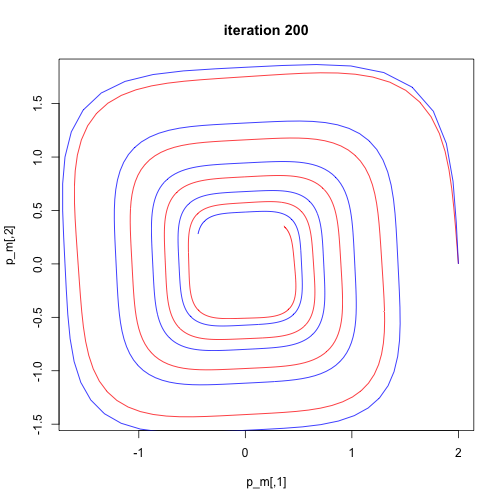

This vignette runs through a small example of how to use tfNeuralODE to learn differential equations. We start by importing all of the correct packages, and instantiating a few constants.
# initial checks for python
library(reticulate)
if(!py_available()){
install_python()
}
#checking for tensorflow and keras installation
#checking for tensorflow installation
if(!py_module_available("tensorflow")){
tensorflow::install_tensorflow()
}
library(tensorflow)
library(tfNeuralODE)
library(keras)
library(deSolve)
# constants
data_size = 1000
batch_time = 20 # this seems to works the best ...
niters = 200
batch_size = 16Now we create the neural network that will define our system. We also instantiate a few more constants that define our system.
# ODE Model with time input
OdeModel(keras$Model) %py_class% {
initialize <- function() {
super$initialize()
self$block_1 <- layer_dense(units = 50, activation = 'tanh')
self$block_2 <- layer_dense(units = 2, activation = 'linear')
}
call <- function(inputs) {
x<- inputs ^ 3
x <- self$block_1(x)
self$block_2(x)
}
}
model<- OdeModel()
# more constants, time vectors
tsteps <- seq(0, 25, by = 25/data_size)
true_y0 = c(2., 0.)
true_A = rbind(c(-0.1, 2.0), c(-2.0, -0.1))Now we solve the ODE and plot our results.
# solving a spiral ode
trueODEfunc<- function(du, u, p, t){
true_A = rbind(c(-0.1, 2.0), c(-2.0, -0.1))
du <- (u^3) %*% true_A
return(list(du))
}
# solved ode output
prob_trueode <- lsode(func = trueODEfunc, y = true_y0, times = tsteps)Let’s start looking at how we’re going to train our model. We instantiate an optimizer and create a batching function.
#optimizer
optimizer = tf$keras$optimizers$legacy$Adam(learning_rate = 1e-3)
# batching function
get_batch<- function(prob_trueode, tsteps){
starts = sample(seq(1, data_size - batch_time), size = batch_size, replace = FALSE)
batch_y0 <- as.matrix(prob_trueode[starts,])
batch_yN <- as.matrix(prob_trueode[starts + batch_time,])
batch_y0 <- tf$cast((batch_y0), dtype = tf$float32)
batch_yN <- tf$cast((batch_yN), dtype = tf$float32)
return(list(batch_y0, batch_yN))
}Now we can train our neural ODE, using naive backpropagation.
# Training Neural ODE
for(i in 1:niters){
#print(paste("Iteration", i, "out of", niters, "iterations."))
inp = get_batch(prob_trueode[,2:3], tsteps)
pred = forward(model, inputs = inp[[1]], tsteps = tsteps[1:batch_time])
with(tf$GradientTape() %as% tape, {
tape$watch(pred)
loss = tf$reduce_mean(tf$abs(pred - inp[[2]]))
})
#print(paste("loss:", as.numeric(loss)))
dLoss = tape$gradient(loss, pred)
list_w = backward(model, tsteps[1:batch_time], pred, output_gradients = dLoss)
optimizer$apply_gradients(zip_lists(list_w[[3]], model$trainable_variables))
# graphing the Neural ODE
if(i %% 200 == 0){
pred_y = forward(model = model, inputs = tf$cast(t(as.matrix(true_y0)), dtype = tf$float32),
tsteps = tsteps, return_states = TRUE)
pred_y_c<- k_concatenate(pred_y[[2]], 1)
p_m<- as.matrix(pred_y_c)
plot(p_m, main = paste("iteration", i), type = "l", col = "red")
lines(prob_trueode[,2], prob_trueode[,3], col = "blue")
}
}

plot of the final result